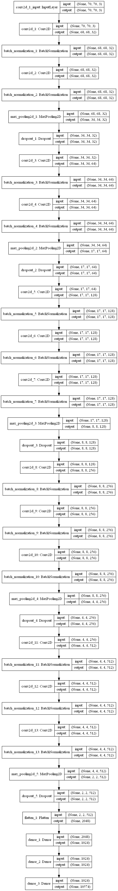
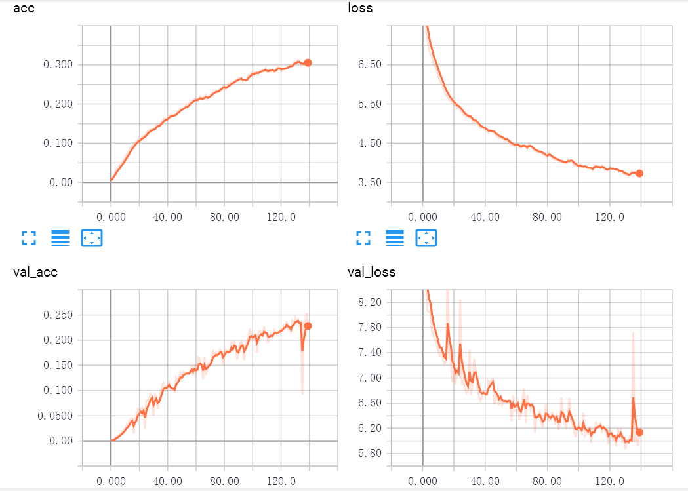
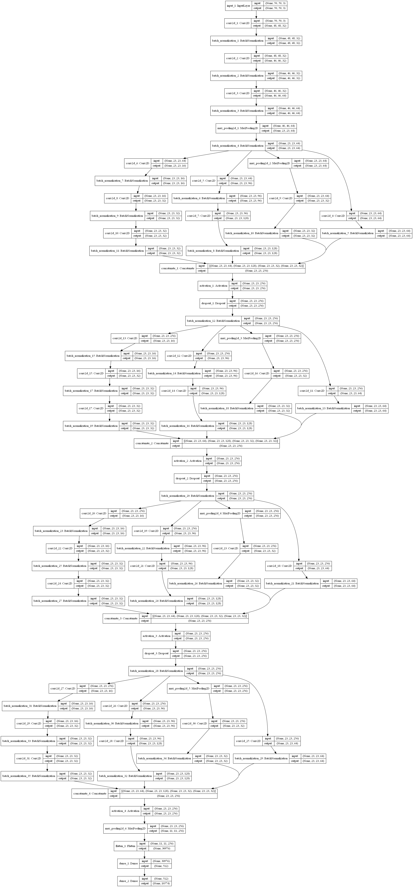

这个demo是学校课程的期末project，在此做个传送门直接链接到GitHub仓库。
传送门：https://github.com/RikoLi/ML_project_3_Face_Verification
数据集说明
使用CASIA WebFace名人脸图数据集，共10575类（使用时修改为10574类），数据集自带训练集、验证集的索引文件。
运行环境
- 操作系统：CentOS Linux release 7.5.1804 (Core)
- 框架：Keras 2.2.2
- GPU：NVIDIA Tesla K40m
感谢ZJUSPC提供硬件支持！ut鸽鸽大好き！
模型说明
前期模型
早期参考了DeepID网络结构，对DeepID v1结构增加了更多的卷积层与卷积channel数量，增加了DeepID层的神经元个数。

独特结构在于使用DeepID全连接层表示提取出的人脸特征，DeepID层与最后一个卷积层和上一个最大池化层进行全连接。
参考文献中指出早期的DeepID v1模型作为分类器进行训练的最高准确率在40%~60%间为正常结果，我使用修改之后的DeepID训练14小时后获得的验证集上准确率为50.75%。
后期模型
VGG风格
课程结束后，我希望使用传统结构VGG测试一下VGG在该数据集上的表现能力。于是以VGG16为蓝本，考虑到显存大小减少了一些待学习参数的规模。此外加入了大量的BN层，在每次最大池化后加入Dropout层。

事实发现VGG的效果并不好，将近140个epoch只获得了20%~25%的验证集准确率，而且波动非常大。

Inception
使用Google提出的Inception结构进行尝试，结构图如下：

使用了Inception的Block架构，一条支路用连续的两个3×3卷积核代替5×5卷积核，减少参数量。此外增加了大量的BN层用于对非线性激活函数之后的feature map进行标准化，在Block之间加入了Dropout层进行正则化处理。
特征相似性比较
使用训练好的模型进行特征抽取，得到全连接层的输出，使用一些距离测度进行相似性分析。
Euclidean距离
即欧几里得距离，向量L2范数。向量$\bold{x}$为进行相似度判断的两个特征向量的差向量（对应元素做差）。